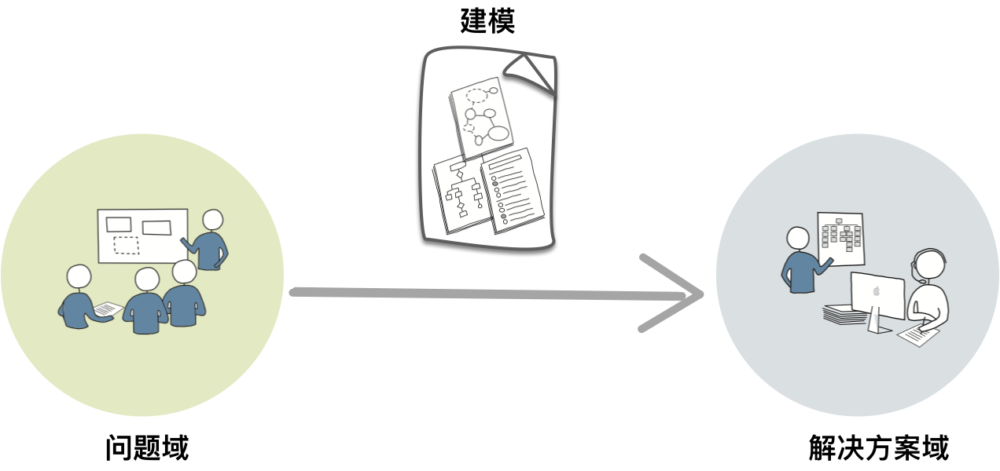
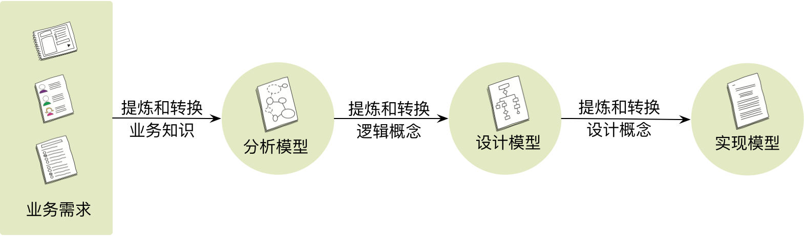
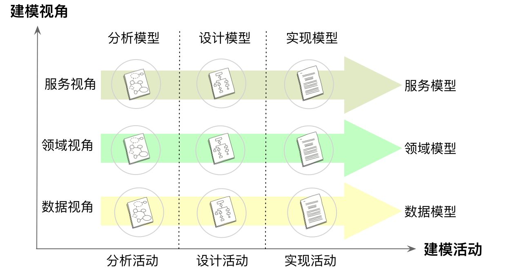

- 001 「战略篇」访谈 DDD 和微服务是什么关系？.md
- 002 「战略篇」开篇词：领域驱动设计，重焕青春的设计经典.md
- 003 领域驱动设计概览.md
- 004 深入分析软件的复杂度.md
- 005 控制软件复杂度的原则.md
- 006 领域驱动设计对软件复杂度的应对（上）.md
- 007 领域驱动设计对软件复杂度的应对（下）.md
- 008 软件开发团队的沟通与协作.md
- 009 运用领域场景分析提炼领域知识（上）.md
- 010 运用领域场景分析提炼领域知识（下）.md
- 011 建立统一语言.md
- 012 理解限界上下文.md
- 013 限界上下文的控制力（上）.md
- 014 限界上下文的控制力（下）.md
- 015 识别限界上下文（上）.md
- 016 识别限界上下文（下）.md
- 017 理解上下文映射.md
- 018 上下文映射的团队协作模式.md
- 019 上下文映射的通信集成模式.md
- 020 辨别限界上下文的协作关系（上）.md
- 021 辨别限界上下文的协作关系（下）.md
- 022 认识分层架构.md
- 023 分层架构的演化.md
- 024 领域驱动架构的演进.md
- 025 案例 层次的职责与协作关系（图文篇）.md
- 026 限界上下文与架构.md
- 027 限界上下文对架构的影响.md
- 028 领域驱动设计的代码模型.md
- 029 代码模型的架构决策.md
- 030 实践 先启阶段的需求分析.md
- 031 实践 先启阶段的领域场景分析（上）.md
- 032 实践 先启阶段的领域场景分析（下）.md
- 033 实践 识别限界上下文.md
- 034 实践 确定限界上下文的协作关系.md
- 035 实践 EAS 的整体架构.md
- 036 「战术篇」访谈：DDD 能帮开发团队提高设计水平吗？.md
- 037 「战术篇」开篇词：领域驱动设计的不确定性.md
- 038 什么是模型.md
- 039 数据分析模型.md
- 040 数据设计模型.md
- 041 数据模型与对象模型.md
- 042 数据实现模型.md
- 043 案例 培训管理系统.md
- 044 服务资源模型.md
- 045 服务行为模型.md
- 046 服务设计模型.md
- 047 领域模型驱动设计.md
- 048 领域实现模型.md
- 049 理解领域模型.md
- 050 领域模型与结构范式.md
- 051 领域模型与对象范式（上）.md
- 052 领域模型与对象范式（中）.md
- 053 领域模型与对象范式（下）.md
- 054 领域模型与函数范式.md
- 055 领域驱动分层架构与对象模型.md
- 056 统一语言与领域分析模型.md
- 057 精炼领域分析模型.md
- 058 彩色 UML 与彩色建模.md
- 059 四色建模法.md
- 060 案例 订单核心流程的四色建模.md
- 061 事件风暴与业务全景探索.md
- 062 事件风暴与领域分析建模.md
- 063 案例 订单核心流程的事件风暴.md
- 064 表达领域设计模型.md
- 065 实体.md
- 066 值对象.md
- 067 对象图与聚合.md
- 068 聚合设计原则.md
- 069 聚合之间的关系.md
- 070 聚合的设计过程.md
- 071 案例 培训领域模型的聚合设计.md
- 072 领域模型对象的生命周期-工厂.md
- 073 领域模型对象的生命周期-资源库.md
- 074 领域服务.md
- 075 案例 领域设计模型的价值.md
- 076 应用服务.md
- 077 场景的设计驱动力.md
- 078 案例 薪资管理系统的场景驱动设计.md
- 079 场景驱动设计与 DCI 模式.md
- 080 领域事件.md
- 081 发布者—订阅者模式.md
- 082 事件溯源模式.md
- 083 测试优先的领域实现建模.md
- 084 深入理解简单设计.md
- 085 案例 薪资管理系统的测试驱动开发（上）.md
- 086 案例 薪资管理系统的测试驱动开发（下）.md
- 087 对象关系映射（上）.md
- 088 对象关系映射（下）.md
- 089 领域模型与数据模型.md
- 090 领域驱动设计对持久化的影响.md
- 091 领域驱动设计体系.md
- 092 子领域与限界上下文.md
- 093 限界上下文的边界与协作.md
- 094 限界上下文之间的分布式通信.md
- 095 命令查询职责分离.md
- 096 分布式柔性事务.md
- 097 设计概念的统一语言.md
- 098 模型对象.md
- 099 领域驱动设计参考过程模型.md
- 100 领域驱动设计的精髓.md
- 101 实践 员工上下文的领域建模.md
- 102 实践 考勤上下文的领域建模.md
- 103 实践 项目上下文的领域建模.md
- 104 实践 培训上下文的业务需求.md
- 105 实践 培训上下文的领域分析建模.md
- 106 实践 培训上下文的领域设计建模.md
- 107 实践 培训上下文的领域实现建模.md
- 108 实践 EAS 系统的代码模型.md
- 109 后记：如何学习领域驱动设计.md
038 什么是模型
从领域驱动的战略设计进入战术设计，简单说来，就是跨过系统视角的限界上下文边界进入它的内部，从分层架构的逻辑分层进入到每一层的内部。在思考内部的设计细节时，首先需要思考的问题就是：什么是模型（Model）？
什么是模型
还是来看看 Eric Evans 对模型的阐述：
为了创建真正能为用户活动所用的软件，开发团队必须运用一整套与这些活动有关的知识体系。所需知识的广度可能令人望而生畏，庞大而复杂的信息也可能超乎想象。模型正是解决此类信息超载问题的工具。模型这种知识形式对知识进行了选择性的简化和有意的结构化。适当的模型可以使人理解信息的意义，并专注于问题。
如何才能让“庞大而复杂的信息”变得更加简单，让分析人员的心智模型可以容纳这些复杂的信息呢？那就是利用抽象化繁为简，通过标准的结构来组织和传递信息，形成一致的可以进行推演的解决方案，这就是“模型”。模型反应了现实问题，表达了真实世界存在的概念，但它并不是现实问题与真实世界本身，而是分析人员对它们的一种加工与提炼。这就好比真实世界中的各种物质可以用化学元素来表达一般，例如流动的水是真实世界存在的物体，而“水（Water）”这个词则是该物体与之对应的概念，H_2OH2O 则是水的模型（同时，H_2OH2O 也是化学世界中的统一语言）。
模型往往会作为交流的有效工具，因而会要求用经济而直观的形式来表达，其中最常用的表现形式就是图形。例如轨道交通线网图：

说明：本图来自本地宝的北京城市轨道交通线网图。
该交通线网图体现了模型的许多特点。
- 首先它是抽象的。与地图不同，它并非现实世界中轨道交通线网的缩影，图中的每条轨道其实都是理想化的几何图形，以线段为主，仅仅展现了轨道线的方位、走向和距离。
- 其次它利用了可视化的元素。这些元素实际上都是传递信息的信号量，例如使用不同的颜色来区分线路，使用不同大小的形状与符号来区分普通站点与中转站。模型还传递了重要的模型要素，如线路、站点、站点数量、站点距离、中转站以及方向，因为对于乘客而言，仅需要这些要素即可获得有用的路径规划与指导信息。
针对现实世界的问题域建立抽象的模型形成解决方案，这个过程视软件复杂度而定，可能会非常漫长。这其间需要迭代的分析、设计和实现，逐步浮现出最终可行的方案，构建满足需求的软件。从问题域到解决方案域，或许有多种途径或手段，然而针对复杂问题域，通过建立抽象的模型来映射现实世界的多样性，就好似通过数学公式来求解一般，是实践证明可行的道路：

模型的重要性并不体现在它的表现形式，而在于它传递的知识。它是从需求到编码实现的知识翻译器，通过它对杂乱无章的问题进行梳理，消除无关逻辑乃至次要逻辑的噪音，然后再按照知识语义进行归纳与分类，并遵循设计标准与规范建立一个清晰表达业务需求的结构。这个梳理、归纳与分类的过程就是建模的过程，建立的结构即为模型。建模过程与软件开发生命周期的各种不同的活动（Activity）息息相关，它们之间的关系大体如下图所示：

建模活动用灰色的椭圆表示，它主要包括需求分析、软件架构、详细设计和编码与调试等活动，有时候，测试、集成与保障维护活动也会在一定程度上影响系统的建模。为了便于更好地理解建模过程，我将整个建模过程中主要开展的活动称之为“建模活动”，并统一归纳为分析活动、设计活动与实现活动。每一次建模活动都是对知识的一次提炼和转换，产出的成果就是各个建模活动的模型。
- 分析活动：观察现实世界的业务需求，依据设计者的建模观点对业务知识进行提炼与转换，形成表达了业务规则、业务流程或业务关系的逻辑概念，建立分析模型。
- 设计活动：运用软件设计方法进一步提炼与转换分析模型中的逻辑概念，建立设计模型，使得模型在满足需求功能的同时满足更高的设计质量。
- 实现活动：通过编码对设计模型中的概念进行提炼与转换，建立实现模型，构建可以运行的高质量软件，同时满足未来的需求变更与产品维护。
整个建模过程如下图所示：

不同的建模活动会建立不同的模型，上图表达的建模过程体现了这三种模型的递进关系。但是，这种递进关系并不意味着分析、设计与实现形成一种前后相连的串行过程，而应该是分析中蕴含了设计，设计中夹带了实现，甚至在实现中回溯到设计，从而形成一种迭代的螺旋上升的演进过程。不过，在建模的某一个瞬间，针对同一问题，分析、设计与实现这三个活动不能同时进行，这就好似开发过程中不能同时戴上重构与功能实现这两顶帽子一般，它们其实是相互影响、不断切换与递进的关系。一个完整的建模过程，就是模型驱动设计（Model-Driven-Design）。
不仅仅是建模活动会对模型带来影响，设计者在面对业务需求时，关注的视角不同，抽象的设计思想不同，也会导致模型的不同，这就形成了从建模视角产生的模型分类。如果我们是以数据为核心，关注数据实体的样式和它们之间的关系，由此建立的模型就是“数据模型”。如果我们需要为系统外部的客户端提供服务，关注的是客户端发起的请求以及服务返回的响应，由此建立的模型就是“服务模型”。而领域驱动设计则强调以领域为中心，通过识别领域对象来表达业务系统的领域知识包括业务流程、业务规则和约束关系，由此建立的模型就是“领域模型”。这三种不同的模型，就是不同视角的模型驱动设计获得的结果。因此，整个模型驱动设计可以分为两个不同的维度来表现模型，即建模视角与建模活动。不同的建模视角驱动出不同的抽象模型，而不同的建模活动，也会获得不同抽象层次的模型。这两个维度表达的模型驱动设计如下图所示：

无论分析模型、设计模型还是实现模型，它们皆是对现实世界的抽象，只是抽象的层次和目的不同罢了。如何观察现实世界，又可能影响我们最终获得的模型。当我们将现实世界视为由数据组成的系统时，就可以建立一个由数据实体概念组成的软件世界，并驱动着获得以数据模型为核心的解决方案。当我们将现实世界隐喻为一个 Web 系统时，现实世界的任何事物都是暴露给 Web 系统的资源，这就获得了以服务资源模型为核心的解决方案。当我们将现实世界认为是提供服务行为的容器，并由此产生与消费者的协作，就获得了以服务行为模型为核心的解决方案。当我们将现实世界看做是由核心领域与子领域组合而成的问题域时，我们就将围绕着领域模型为核心，驱动并指导着我们的设计，形成以领域模型为核心的解决方案。
Eric Evans 认为模型驱动设计是领域驱动设计中的一种模式。它并没有给出模型驱动设计的定义，只是提出“严格按照基础模型来编写代码，能够使代码更好地表达设计含义，并且使模型与实际的系统相契合。”但我认为，模型的范围要大于领域模型，设计过程也会因为建立模型的不同而各有不同的路径与方向。于是，数据视角产生数据模型驱动设计，服务视角产生服务模型驱动设计，领域视角则产生领域模型驱动设计。在模型驱动的设计过程中，我们获得的模型还将受到建模范式的影响，尤其针对设计与实现，建模范式就意味着设计思想与编程范式的不同，最后获得的模型可能会大相径庭。
因此，要理解和学习领域驱动设计，我们需要辨别各种模型的差异，理解建模范式对模型产生的影响，同样还要认识到：领域驱动设计不过是模型驱动设计中的一种罢了。